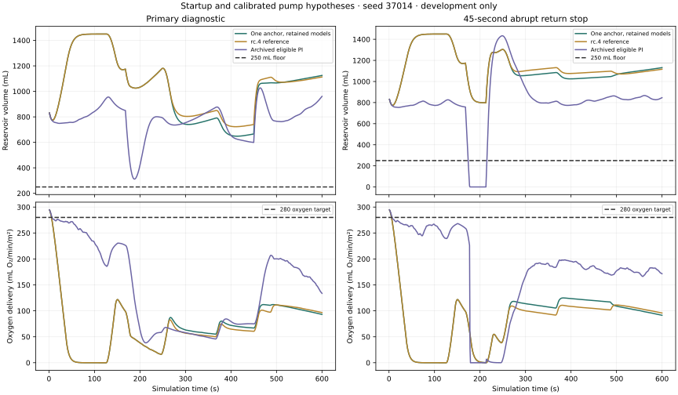
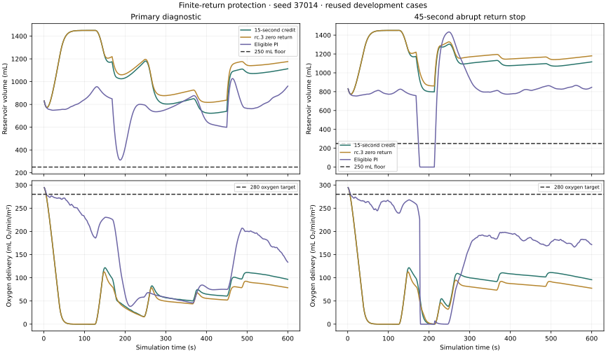
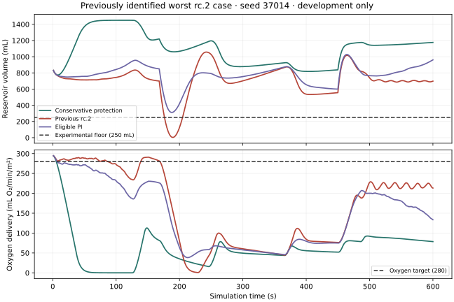

COMPUTATIONAL BIOMEDICINE / EXPERIMENT 001
When the monitor
says everything’s fine.
What happens when oxygen readings drift, venous return falls, and more pump flow becomes the wrong answer? Explore a cardiopulmonary bypass simulation built to reveal the tradeoffs.
01 / ENTER THE LAB
A controlled failure.
Representative virtual patient · Seed 100 · 20-minute experiment
Delivery: truth vs. monitor
TrueMonitorTarget
The reservoir constraint
Volume (L)¹ Monitor values, and sensed/lower-estimate reservoir traces where shown, come from the start of the preceding 2-second interval. Reservoir truth is at interval end; green = truth, cyan = sensed, amber = guarded lower estimate. Plots are sampled every 6 seconds; full-resolution metrics use every 2-second step. The browser replays Python output and does not run a second physiology engine.
WHOLE EXPERIMENT / SELECTED PATIENT
ORIGINAL COHORT / 24 VIRTUAL PATIENTS
Difference = selected strategy − reactive. Bootstrap intervals describe the synthetic sampler, not clinical benefit.02 / A SMALL WHAT-IF
Flow is only
half the story.
At the same flow, anemia changes how much oxygen blood can carry. Try the standard arterial-content equation. This calculator is separate from the replay.
mL O₂/min/m²
SaO₂ = 0.98 · PaO₂ = 150 mmHg · BSA = 1.85 m². Fixed hypothetical conditions; no recommended treatment.FINAL V1 / COMPLETE RESEARCH SNAPSHOT
Close v1 with the evidence.
Start v2 with a new goal.
All research through the MPC feedback comparison belongs to v1, including milestones previously labelled as v2 release candidates. The complete final snapshot is v1.15.0. Historical execution IDs remain unchanged inside frozen protocols; their current classification is v1.
The tested MPC improves oxygen deficit by only 0.1435% versus matched PI and is slightly worse than the existing hybrid. With the recorded PI command-ceiling streams held fixed, a monotonic pump-dynamics argument bounds even an optimistic controller's possible improvement at about 0.0163%. That rules out 10% for this fixed-ceiling class and these cases.
This is not proof that every MPC design is incapable of 10%.
A controller can change future reservoir states and therefore future protection ceilings. The bound does not cover that broader class. V1 closes with a failed tested target and a precise conditional limit, rather than an unsupported universal claim.
V2 will pursue recovery-aware delivery: detect interrupted return from measurements, retain independent reservoir protection, and restore delivery promptly when return recovers. The first simulation will compare recovery-window deficit, total deficit, recovery time, false alarms, floor exposure and empty requests against equally informed PI. A recovery-specific gain alone does not meet the original full-run 10% release milestone.
V1 RESEARCH / MPC APPLIED IN FEEDBACK
The planner controls the pump.
The gain is still too small.
This experiment applies the horizon optimizer's commands to the simulated plant. Matched PI and MPC receive the same point-volume estimate, sensor streams and action authority; an independent lower-volume estimate determines their shared protection cap. Rejected or unsupported solves fall back to protected PI.
| Controller | Mean oxygen-deficit AUC | Floor cases | Empty cases |
|---|---|---|---|
| Matched point-estimate PI | 1455.984 | 0/16 | 0/16 |
| Horizon MPC in feedback | 1453.894 | 0/16 | 0/16 |
| Existing v1.15-dev.5 hybrid reference | 1453.288 | 0/16 | 0/16 |
MPC lowers deficit by 0.1435% versus matched PI and is about 0.0418% worse than v1.15-dev.5. Its actions are applied on 7,459 steps. It chooses a different action from the protected PI counterfactual at the same trajectory state on only 42 steps. This tested nominal planner does not establish useful superiority.
All 48 complete applied trajectories and fallback outcomes remain public: 2,120 unsupported/infeasible-reserve steps, 19 invalid prediction inputs and two secondary-solve or validation rejections use protected PI. There are zero observed shared-cap violations. These scoped outcomes are not a general safety guarantee.
The 10% target is not met. Do not expand this exact candidate into a large tuning sweep.
This small reused cohort tests actual controller behavior, not independent confirmation. Further gains need a concrete improvement in shared state/return information or a separately justified physical protection change. The v1 MPC milestone remains unqualified; its gates and both reserved confirmation cohorts are unchanged. No hardware or clinical validation is claimed.
HORIZON FOUNDATION / PRIOR OFFLINE STUDY
Find the binding limit.
Then test the planner.
I ran 384 measured-controller cases on the same 32 development patients and labelled which limit was active during each interval. For v1.15-dev.5, 90.50% of oxygen deficit occurs while the stopping reserve binds. That is a temporal association, not evidence that removing reserve would safely recover that delivery. A fast PI arm nearly matches v1.15-dev.5 under the same protection.
| Controller | Mean deficit AUC | Floor / empty cases | Deficit in reserve-limited intervals |
|---|---|---|---|
| v1.15-dev.5 hybrid | 1456.624 | 0 / 0 | 90.50% |
| Illustrative standard PI | 1461.379 | 0 / 0 | 87.07% |
| Illustrative fast PI | 1456.578 | 0 / 0 | 91.71% |
The new offline nominal optimizer uses physical pump flow, reservoir volume and pressure, a linear oxygen-deficit objective, normal command slew and an explicit zero-return braking continuation. Its terminal state includes the discrete coast-down reserve. Returned plans must pass an independent physical rollout and constraint check; rejected plans emit no action.
Of 1,024 offline snapshots, 888 plans pass and 136 invalid-input snapshots are rejected. No optimizer command is applied to the plant. Recorded medians across snapshot attempts are about 5.3–5.5 ms, including zero entries for input rejections. Every accepted reference solve exceeds the illustrative 2 ms target; formulation and observation time are excluded. The recorded runs use HiGHS. An equivalent scaling resolves an OSQP fixture's iteration-limit failure without relaxing physical checks; broader solver reliability remains to be established.
A working nominal optimizer is a research component, not a qualified MPC controller.
Next: separate physical reserve from uncertainty cost, validate anchored estimation and causal return forecasts, then integrate independent protection and retune PI across the full development matrix. Both illustrative PI settings and every rejection remain reported. The ≥10% improvement and protection gates are unchanged. The v1 MPC milestone is not released; both confirmation cohorts stay untouched.
IDENTIFIABILITY / PRIOR INFORMATION AUDIT
Can the sensors distinguish
what the controller needs to know?
Before adding a bias-aware estimator and full horizon MPC, I tested whether initial reservoir volume, sensor offsets, patient storage and pump lag can produce distinguishable measurements. The audit uses the actual simulator, physical pump lag and delayed reference schedule, with recorded commands held fixed across perturbations.
| Information assumption | Full-rank cases | Rank / unknowns |
|---|---|---|
| Healthy absolute routine and calibration references | 128/128 | 6/6 |
| Routine outage; healthy calibration retained | 128/128 | 6/6 |
| Calibration missing; remaining level offset unknown | 0/128 | 6/7 |
| Shared unknown absolute level offset | 0/128 | 6/7 |
A +20 mL shift in initial reservoir volume, a −20 mL shift in unstressed patient storage and a −20 mL shared level offset leave predicted measurements unchanged to numerical precision in the tested trajectories. Additional command variation cannot resolve that particular ambiguity while the symmetry holds. The estimator needs an independent absolute anchor or justified independent storage information.
The work includes 128 baseline runs, 3,968 offline plant replays and 2,048 local analyses across four availability cutoffs. Halving the numerical perturbation produces no rank disagreements. These are repeated analyses of development cases, not independent patient confirmation. Other patient parameters and disturbance profiles are held known; noisy parameter recovery and broader model uncertainty remain untested.
This milestone changes the research direction, not the controller's measured performance.
Next: validate an independently anchored estimator, give identical estimates and protection to PI and MPC, then test horizon planning with physical stopping reserve. Current controller: v1.15-dev.5. The v1 MPC milestone remains blocked; its ≥10% delivery-improvement requirement and all protection gates are unchanged. Both reserved confirmation cohorts remain untouched. No hardware or clinical validation is claimed.
v1.15-dev.5 / ADAPTIVE DEVELOPMENT ONLY
Earlier support is not enough.
Test the braking bottleneck.
The first independent calibration arrives at 6 seconds; the second arrives at 126 seconds. One anchor can initialize a wide volume/bias set without narrowing the existing uncertainty allowances. Earlier support alone lowers mean deficit by only 0.009%. The controller still lacks a feasible higher-flow command.
The adaptive follow-up reserves against pump hypotheses still consistent with calibration, instead of the entire configured grid. This tests the braking bottleneck with one- and two-anchor support. It makes protection conditional on retaining a sufficiently accurate pump response; a bad calibration/model assumption can discard the real response and defeat reserve.
| Arm | Startup unsupported (s) | Primary deficit AUC | Primary floor crossings | Abrupt-stop floor crossings |
|---|---|---|---|---|
| v1.15-dev.4 reference | 126 | 1545.77 | 0/512 | 0/128 |
| One anchor, full grid | 6 | 1545.64 | 0/512 | 0/128 |
| Two anchors, retained models | 126 | 1456.76 | 0/512 | 0/128 |
| One anchor, retained models | 6 | 1456.62 | 0/512 | 0/128 |
The fixed follow-up selection rule chooses one anchor, retained models. Primary deficit falls 5.8% versus v1.15-dev.4, from 1545.77 to 1456.62, with zero floor crossings and empty requests in the primary and abrupt-stop grids. Its worst primary reservoir minimum is 494.40 mL.
The complete development milestone still fails. The v1 MPC milestone remains blocked on oxygen delivery and later independent confirmation.
Archived eligible PI has mean primary deficit 444.08. These are reused development data: the 2,048-run startup comparison informed a 2,048-run follow-up, completing four paired mechanism arms. The same 512 archived PI primary cases supply the unchanged gate comparison and are not counted as new runs. No independent confirmation, universal protection or hardware/clinical validation is claimed.
All calibration-failure outcomes
| Regime / arm | Deficit AUC | Floor crossings | Empty requests |
|---|---|---|---|
| missing / v1.15-dev.4 reference | 2706.39 | 0/128 | 0/128 |
| missing / One anchor, full grid | 2706.39 | 0/128 | 0/128 |
| missing / Two anchors, retained models | 2706.39 | 0/128 | 0/128 |
| missing / One anchor, retained models | 2706.39 | 0/128 | 0/128 |
| biased / v1.15-dev.4 reference | 1364.42 | 0/128 | 0/128 |
| biased / One anchor, full grid | 1361.36 | 0/128 | 0/128 |
| biased / Two anchors, retained models | 1273.74 | 0/128 | 0/128 |
| biased / One anchor, retained models | 1270.68 | 0/128 | 0/128 |
| shared / v1.15-dev.4 reference | 1364.42 | 0/128 | 0/128 |
| shared / One anchor, full grid | 1361.36 | 0/128 | 0/128 |
| shared / Two anchors, retained models | 1273.74 | 0/128 | 0/128 |
| shared / One anchor, retained models | 1270.68 | 0/128 | 0/128 |
All settings, failures and both protocols remain public. Missing calibration preserves the braking fallback and its delivery cost. Shared absolute bias remains unidentifiable, and passing this abrupt-stop grid does not prove the model-retention assumptions generally valid.

New v1.15-dev.5 simulations: 2,048 primary, 1,536 calibration-failure and 512 abrupt-stop runs, for 4,096 total. Confirmation remains 0/2 and both reserved cohorts stay untouched. Final v1 is now v1.15.0; the interactive controls below retain the labelled historical experiments.
v1.15-dev.4 / DEVELOPMENT ONLY
Testing a limited return-flow assumption.
v1.15-dev.3 protected the reservoir but braked too much. This iteration credits half of a conservative current return-flow estimate for 15, 30 or 60 seconds, then assumes zero return forever. The exact braking reserve still retains every configured pump-lag model. These are explicit engineering assumptions about future return, not measurements or guarantees.
| Controller | Primary deficit AUC | Primary floor crossings | Abrupt-stop floor crossings | Primary worst minimum (mL) |
|---|---|---|---|---|
| 15-second credit | 1545.77 | 0/512 | 0/128 | 656.99 |
| 30-second credit | 1281.77 | 0/512 | 21/128 | 538.91 |
| 60-second credit | 1196.16 | 0/512 | 56/128 | 537.63 |
| v1.15-dev.3 zero-return reference | 1749.13 | 0/512 | 0/128 | 753.62 |
| Previous v1.15-dev.2 | 396.25 | 24/512 | 118/128 | 3.54 |
| Eligible PI | 444.08 | 28/512 | 123/128 | 108.60 |
The fixed development rule selects 15-second credit: zero floor crossings and zero empty requests in both the primary and abrupt-stop grids, then lowest primary deficit among qualifying candidates. Mean primary deficit falls 11.6% versus v1.15-dev.3, from 1749.13 to 1545.77.
The fixed 6,144-run experiment includes 3,072 primary, 2,304 calibration-failure and 768 abrupt-stop simulations. In the extra challenge, return stops for 45 seconds without advance warning. The controller sees current measurements; it never receives the event schedule. The three frozen references exactly reproduce all 2,688 repeated v1.15-dev.3 comparison cases.
The complete development milestone still fails. The v1 MPC milestone is not ready.
The three finite-credit candidates have 0 floor-crossing cases and 0 empty-request cases across their 1,152 missing/biased/shared-calibration runs. All failures and per-method/regime results remain in the linked logs. Missing calibration retains maximum permitted braking; finite credit never enables recovery without independent support.
Unknown shared absolute calibration bias and pump dynamics outside the configured grid can still invalidate protection. Passing a finite set of abrupt-stop tests does not validate the return-flow assumption in general.

Confirmation remains 0/2, with both reserved 32-patient cohorts untouched. Final v1 is now v1.15.0. The interactive controls below replay the labelled historical experiments.
v1.15-dev.3 / DEVELOPMENT ONLY
Depletion prevented in this grid.
Oxygen delivery still needs work.
The new protection mode budgets for return flow stopping completely while the pump slows. It retains every configured pump-lag model for braking and commands maximum permitted deceleration when independent calibration support is missing or conflicting. The previous controller and independently selected PI comparator are rerun with the same inputs and actuator limits.
| Controller | Oxygen-deficit AUC (mL O₂/m²) | Cases below 250 mL | Worst minimum (mL) |
|---|---|---|---|
| Conservative protection | 1749.13 | 0/512 | 753.62 |
| Previous v1.15-dev.2 | 396.25 | 24/512 | 3.54 |
| Eligible PI | 444.08 | 28/512 | 108.60 |
All three methods have zero primary empty-reservoir requests. Across 2,688 new runs (1,536 primary and 1,152 calibration-failure runs), the protected mode has no floor crossings or empty requests. In missing/biased/shared-calibration tests its worst minimum is 622.15 mL. These are observed results within this synthetic grid, not guaranteed protection against arbitrary corruption or omitted pump dynamics.
The protection costs too much oxygen delivery.
Primary deficit AUC rises to 1,749.13 from 396.25 for v1.15-dev.2 and 444.08 for eligible PI. Missing-calibration deficit rises further to 2,706.39. The v1 MPC milestone remains blocked. The next step is a less restrictive protection design with explicit return-flow assumptions, while retaining this conservative mode as a reference.

The same 32 patients are reused for development; confirmation remains 0/2. Final v1 is now v1.15.0. The interactive controls below continue to replay the labelled historical experiments, including v1.15-dev.2.
v1.15-dev.2 / PREVIOUS DEVELOPMENT
Better mean delivery.
Individual failures remain.
Calibration-consistent volume/venous-offset sets and joint braking were tested separately, then combined with an adaptive PI-base follow-up. Across the predefined healthy-calibration development grid, the selected configuration lowers oxygen-deficit AUC from 444.08 to 396.25 (10.8%) versus development-selected eligible PI. It has zero empty requests in 512 primary cases. Design and selection reuse the same 32 virtual patients; these are exploratory results.
| Regime | Selected deficit | PI deficit | Reduction | Selected below floor | PI below floor |
|---|---|---|---|---|---|
| Clean reference | 395.92 | 420.75 | 5.9% | 0.83 | 0.98 |
| Reference bias | 396.55 | 455.13 | 12.9% | 0.80 | 0.59 |
| Reference outage | 395.96 | 445.29 | 11.1% | 0.82 | 0.71 |
The full milestone still fails: clean-reference improvement is only 5.9%, below the required 10%. Other declared mean/paired reservoir and pressure gates pass on development data. The faster legacy-interval/aggressive-base arm produces empty requests and remains an ineligible result.
Average gates do not establish individual protection.
The selected configuration crosses the experimental 250 mL floor in 24/512 cases across 5/32 patients. The longest exposure is 28 s; the lowest volume is 3.54 mL, versus 108.60 mL for eligible PI and 156.83 mL for frozen v1 on this development grid. The lab now includes the post-result worst-case patient (seed 37014). This is a demonstrated depletion failure, despite zero primary empty requests.
Missing calibration leaves an inadequate aggressive PI fallback (78.89 s mean below-floor exposure). Biased/shared calibration can invalidate the range and cause empty requests. Conditional braking assumes a retained pump model and a future inflow lower estimate; an unexpected drainage change can defeat that assumption. Hardware/clinical validation and general superiority remain unestablished.
22,016 completed development runs: a 30-configuration first stage and four-setting adaptive follow-up, using the same 32 patients. An interrupted run, source snapshots and all failures remain archived. Confirmation progress is 0/2; both untouched 32-patient cohorts remain reserved.
03 / v1.14 — CAUSAL MODEL BANK
Estimate volume better.
Keep the protection test.
The observer now propagates several generic pump-response models using actual applied commands and measured inflow. Past delivered calibration samples fit the mass-balance offset and trend. Retained models produce an engineering volume range; disagreement can widen it and disable recovery. No true reservoir volume, true pump lag or future disturbance enters the controller.
A discrete braking reserve accounts for pump lag and rate-limited command changes. Recovery is tapered above a minimum estimated volume, and blending cannot weaken the conditional reserve cap. Matched PI uses the same observer. Retuned calibration-only PI, the frozen previous hybrid and a single-model ablation remain in the comparison.
| Group / controller | Oxygen deficit AUC (mL O₂/m²) | Below reservoir floor (s) | Empty requests (s) | Mean volume error (mL) |
|---|---|---|---|---|
| Clean reference / Model-bank hybrid | 534.70 | 1.01 | 0.00 | 20.77 |
| Clean reference / PI · same observer | 664.84 | 0.31 | 0.00 | 21.05 |
| Clean reference / Retuned calibration-only PI | 396.40 | 77.27 | 1.03 | 42.92 |
| Clean reference / Previous v1.12 hybrid | 529.54 | 1.02 | 0.00 | 28.69 |
| Reference bias / Model-bank hybrid | 567.17 | 0.80 | 0.00 | 24.98 |
| Reference bias / PI · same observer | 696.94 | 0.21 | 0.00 | 24.13 |
| Reference bias / Retuned calibration-only PI | 396.40 | 77.27 | 1.03 | 42.92 |
| Reference bias / Previous v1.12 hybrid | 853.77 | 0.68 | 0.00 | 44.35 |
| Reference outage / Model-bank hybrid | 564.08 | 0.91 | 0.00 | 22.40 |
| Reference outage / PI · same observer | 694.18 | 0.30 | 0.00 | 22.72 |
| Reference outage / Retuned calibration-only PI | 396.40 | 77.27 | 1.03 | 42.92 |
| Reference outage / Previous v1.12 hybrid | 588.72 | 0.83 | 0.00 | 42.81 |
A scoped improvement over the previous hybrid. In the reference-bias group, oxygen deficit falls by 33.6%, from 853.77 to 567.17. The paired difference is −286.60 mL O₂/m² (95% bootstrap interval −320.02 to −251.31). Volume error falls from 44.35 to 24.98 mL. Mean low-reservoir time changes from 0.68 to 0.80 s, with an upper paired extra exposure of 0.26 s; both have zero empty requests. Clean-reference delivery improvement versus the old hybrid is inconclusive, and the outage improvement is smaller.
The complete comparison still fails. The hybrid lowers deficit by about 19–20% versus matched PI, but the upper paired extra low-reservoir times are 1.84, 1.39 and 1.57 s across the three primary groups, beyond the +1 s limit. The preselected calibration-only PI has less oxygen deficit and much worse depletion; those failures remain reported. The hybrid has zero empty requests in primary testing, but clean-reference low-reservoir time is 1.01 s, just over the 1 s milestone.
The range is not guaranteed. Under reference bias with healthy calibration, the lower estimate exceeds true volume for 11.52 s on average per run. Missing calibration disables model recovery and reproduces matched PI. Biased and jointly corrupted calibration still cause substantial estimation errors and can produce depletion and empty requests. Model agreement cannot identify a shared hidden absolute bias.
Road to v2.0: not ready.
4,096 development + 15,360 evaluation runs. Fresh patient/noise seeds and pump responses differ from development; the synthetic circuit and fault families are reused. All settings frozen before evaluation. No ideal truth enters the new controller. Previous controller files remain unchanged for reproduction. Missing/biased/shared calibration are explicit secondary failures. Clinical replacement and scientific novelty remain unestablished. Paper drafts remain excluded.Our project milestone requires ≥10% less mean oxygen deficit with paired evidence, zero primary empty requests, ≤1 s mean low-reservoir exposure, acceptable paired pressure/reservoir margins, and confirmation on two distinct fresh cohorts of at least 32 virtual patients each. The result must hold separately for normal/reference-clean, bias and routine-outage regimes within the calibration assumptions. This exploratory cohort has 16 patients and qualifies as neither confirmation. Version labels do not certify clinical suitability.
Previous slowdown audit and earlier studies
03 / AUDIT THE SLOWDOWN BEFORE ADDING ANOTHER RULE
Room to improve.
Margins still do useful work.
This update changes no sensor-based controller. It audits the previous hybrid and PI decisions, then tests two diagnostic ablations: removing the uncertainty interval and supplying exact reservoir volume. The same patients and fault cases are reused. This is post-result analysis, not fresh performance validation.
| Strategy | Oxygen deficit AUC (mL O₂/m²) | Below reservoir floor (s) | Empty requests (s) | Constraint-compliant runs |
|---|---|---|---|---|
| Observed hybrid · unchanged | 861.16 | 11.38 | 0.00 | 105/128 |
| Matched screened PI | 962.77 | 0.36 | 0.00 | 119/128 |
| Calibration-only PI | 694.67 | 4.66 | 0.00 | 96/128 |
| Diagnostic · interval removed | 567.56 | 94.17 | 5.48 | 35/128 |
| Diagnostic · exact volume supplied | 672.60 | 1.74 | 0.00 | 108/128 |
| Offline truth witness · not deployable | 512.15 | 0.00 | 0.00 | 128/128 |
There is feasible room within this model. The offline truth-informed witness reaches oxygen-deficit AUC 512.15 versus the observed hybrid’s 861.16, about 41% lower, while keeping the reservoir above its floor and avoiding empty requests. It knows true state, true parameters and future disturbances. It is a feasible heuristic, not a sensor-based controller, clinical replacement or global optimum.
Physical limits account for some loss, with an unresolved gap. An optimistic linear-program relaxation gives a numerically checked lower bound of 287.19. The unknown perfect-information physical optimum lies between that bound and the 512.15 full-plant witness under the declared constraints. This does not establish what a causal controller with imperfect sensing can achieve. The remaining 224.96 gap is unresolved; it must not be called unavoidable or recoverable. The relaxed LP allows optimistic drainage/storage and is never replayed as a real plant trajectory.
Deleting uncertainty is not the fix. Removing the interval lowers mean deficit to 567.56 but raises low-reservoir time from 11.38 to 94.17 s and introduces empty requests. Exact volume gives 672.60 and 1.74 s, but still fails the audit constraints in 20 of 128 runs. Better state estimation helps in these diagnostic cases; it does not by itself create a validated controller.
Local probes identify concrete opportunities. Of 38,742 slowdown decisions, 27,793 (71.7%) have a higher-flow first action with improved immediate true oxygen delivery and a verified emergency continuation. These forks use future truth, overlap and cannot be combined into a 72% reduction in slowing. Failed probes do not prove that a slowdown was necessary. The mean engineering interval is 0.275 L, and the lower estimate also exceeds true volume in some biased-reference cases.
All 96 selected witness command schedules are replayable through the full nonlinear plant. Reservoir, slew, pump and pressure constraints are checked. The pressure allowance explicitly permits only the minimum-reachable starting transient above 95 mmHg; raw high-pressure time remains available. LP primal/dual residuals and a conservative finite-box correction are retained. These are numerical model checks, not clinical safety evidence.
640 diagnostic runs, 128 decision audits and 96 physical benchmark cells. All original controller source hashes are unchanged. The first tail approximation is marked superseded; the complete audit was rerun with the exact discrete geometric transfer tail and a counterexample regression test. No retuning, new clinical validation or scientific priority claim. Paper drafts remain excluded.Previous reference-integrity comparison and earlier studies
03 / SCREEN THE REFERENCE BEFORE TRUSTING IT
Bias rejection helps.
Calibration remains an assumption.
The new observer screens routine references before they change either controller’s level correction. It audits simultaneous samples against an independent simulated calibration, checks unpaired samples against calibrated history and a pump model, quarantines suspect references, and widens the plausible volume range with age. Quarantine prevents the predictive override from adding flow, including during fade-out.
The calibration channel is additional simulated information with declared noise and delay. It is not supplied truth or a validated measurement device. Both matched controllers use the same observer design; calibration-only PI gets the same independent measurements and separate development tuning. Screening disabled keeps the same hybrid, allowances and channels, but accepts routine references.
| Group / controller | Oxygen deficit AUC (mL O₂/m²) | Below reservoir floor (s) | Empty requests (s) | High pressure (s) |
|---|---|---|---|---|
| Reference faults / Screened hybrid | 850.55 | 0.58 | 0.00 | 0.83 |
| Reference faults / Matched screened PI | 937.46 | 0.00 | 0.00 | 0.79 |
| Reference faults / Calibration-only PI | 544.76 | 1.19 | 0.00 | 1.32 |
| Reference faults / Screening disabled | 506.39 | 30.44 | 2.51 | 1.64 |
| Clean reference / Screened hybrid | 528.95 | 0.88 | 0.00 | 1.05 |
| Clean reference / Matched screened PI | 804.94 | 0.00 | 0.00 | 0.79 |
| Clean reference / Calibration-only PI | 544.76 | 1.19 | 0.00 | 1.32 |
| Clean reference / Screening disabled | 528.95 | 0.88 | 0.00 | 1.05 |
With healthy calibration, screening reduces reservoir exposure. Across the nonclean reference-fault profiles, time below the reservoir floor falls from 30.44 to 0.58 s versus screening disabled. The paired difference is −29.85 s (95% bootstrap interval −32.32 to −26.48). Empty requests fall from 2.51 s to zero. Oxygen deficit rises from 506.39 to 850.55 mL O₂/m², so this protection has a substantial delivery cost.
Observed reference decisions: the hybrid rejects 3,382 of 3,600 bias-labelled samples (93.9%) and none of 3,120 healthy-bias samples when calibration is healthy. These are synthetic decision counts, not clinical sensitivity or specificity. Rejection can reflect quarantine rather than identification of a particular fault.
The complete engineering criterion fails. Matched screened PI has no low-reservoir exposure in the reference-fault group; the hybrid’s extra exposure has an upper paired interval of 1.28 s, beyond the +1 s limit. Calibration-only PI has oxygen-deficit AUC 544.76 versus the hybrid’s 850.55. Adding the new observer does not establish a better overall controller.
Calibration failure remains a hard limit. With no independent calibration, screening rejects every routine sample, including every healthy one. When both channels share corruption, only 47 of 3,600 biased samples are rejected (1.3%); reservoir exposure remains 27.12 s. A biased calibration also produces false rejection of all healthy routine samples. Agreement cannot certify that either channel is correct.
3,072 development + 10,752 evaluation runs. The chosen common setting narrowly misses the development eligibility threshold and is marked ineligible. One superseded development-only run is retained. Fresh patient/noise seeds reuse previously studied physiology and model assumptions. Healthy calibration is the primary scope; absent, biased and shared-corruption calibration regimes are retained secondary tests. Margins are engineering choices, not clinical equivalence. The comparator remains a verified general SIMC PI method, not a reproduced clinical device. Clinical replacement and novelty remain unestablished. Paper drafts remain excluded.Previous selective PI comparison and earlier studies
03 / PI FOUNDATION, SELECTIVE OVERRIDE
A scoped gain.
An explicit fallback.
PI handles normal operation. A predictive override can add flow toward oxygen demand or reduce it for reservoir risk, but only after two reference acquisitions, recent information and agreement between level estimates. Its weight fades gradually when those checks fail. Recovery adds no flow at measured pressure ≥85 mmHg. The PI integral and pump model track the actual applied command.
The reference is Skogestad’s freely available SIMC PI method, verified against its published mathematical example and applied here as a reservoir override. It is a general process-control method, not a reproduced clinical device. The hybrid uses the development-selected PI foundation (τc = 5 s, level target 0.65 L). The previous fast PI (1.5 s, 0.45 L) is also retained. All share sensor channels, oxygen-demand limits and actuator constraints.
| Reference group / controller | Oxygen deficit AUC (mL O₂/m²) | Below reservoir floor (s) | Empty requests (s) | High pressure (s) |
|---|---|---|---|---|
| Good / PI + selective override | 174.37 | 0.36 | 0.00 | 2.34 |
| Good / Matched SIMC PI | 224.13 | 0.20 | 0.00 | 1.77 |
| Good / Previous fast SIMC PI | 176.49 | 8.42 | 0.00 | 6.53 |
| Outage / PI + selective override | 190.30 | 24.23 | 1.11 | 2.58 |
| Outage / Matched SIMC PI | 190.20 | 24.28 | 1.12 | 2.66 |
| Outage / Previous fast SIMC PI | 153.34 | 31.96 | 21.11 | 6.74 |
Good references: the matched-PI comparison passes. Oxygen deficit falls by 22.2%, with a paired difference of −49.75 mL O₂/m² (95% bootstrap interval −59.49 to −41.50). Extra low-reservoir time has an upper interval of 0.44 s, within the +1 s limit; both methods have zero empty requests. Extra high-pressure time has an upper interval of 1.67 s, within the +5 s limit. This is a scoped simulation result, not a claim of overall clinical superiority.
The full joint goal still fails. Outage oxygen deficit is 190.30 versus 190.20 for matched PI; it does not improve. Compared with fast PI under good references, oxygen deficit differs by −2.12 (−4.82 to +1.05), so lower oxygen deficit is not established. The joint criterion required success against both baselines in both reference groups.
Component tests explain the gain. With good references, recovery alone reaches an AUC of 173.11 but spends 1.66 s below the reservoir floor. Adding the braking path gives 174.37 and 0.36 s. Braking alone gives 225.60 and 0.00 s. These are descriptive comparisons of frozen component arms, not separately tuned replacements.
Biased references remain a serious failure. In that secondary group, low-reservoir time rises to 51.03 s versus 9.70 s for matched PI. Both estimates can share a bad reference, so agreement can be misleading. The out-of-range pump also worsens reservoir exposure. No-reference runs reproduce matched PI exactly; neither is universally protective.
4,096 final-development + 256 component-development checks + 10,240 evaluation runs. Two earlier development-only grids are retained; equal total architecture-search effort is not claimed. Final patient/noise seeds are fresh, but scenario families and model assumptions are reused. Biased/never references and 12-second lag are secondary. A separate steady-state capacity screen is not a dynamic optimal-controller bound. Clinical replacement, clinical benefit and scientific novelty remain unestablished. Paper drafts remain excluded.Previous continuity comparison
| Reference group / controller | Oxygen deficit AUC (mL O₂/m²) | Below reservoir floor (s) | Empty requests (s) | High pressure (s) |
|---|---|---|---|---|
| Good / continuity | 154.35 | 0.74 | 0.08 | 0.38 |
| Good / retuned SIMC PI | 137.08 | 30.85 | 9.42 | 0.02 |
| Good / previous braking | 172.00 | 1.28 | 0.00 | 0.37 |
| Outage / continuity | 307.89 | 30.93 | 16.88 | 0.31 |
| Outage / retuned SIMC PI | 122.49 | 39.46 | 22.15 | 0.03 |
| Outage / previous braking | 2061.44 | 2.89 | 0.00 | 0.00 |
04 / THE METHOD, IN THE OPEN
Challenge the assumptions.
A coupled circuit
A compliant patient compartment drains into a venous reservoir. The pump returns that volume. A Windkessel estimates arterial pressure; oxygen content links flow and hemoglobin to delivery.
An imperfect observer
Inline measurements can drift or disappear. An independent simulated laboratory reference updates the Hb bias estimate every three minutes. Bounds widen with time; they are not calibrated probabilities.
An explicit tradeoff
Existing controller decisions are audited with identical-state forks, diagnostic input ablations and an offline truth-informed witness. Feasible demonstrations are separated from optimistic physical bounds and unsafe ablations.
Research prototype. No clinical validation.
These experiments do not predict kidney injury, reproduce a LivaNova device, or establish safe settings. All fault magnitudes and controller limits are chosen engineering assumptions. The level-bias scenario deliberately breaks an observer assumption.